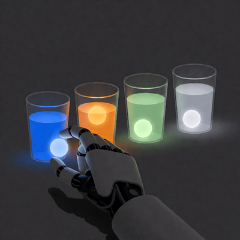

[ ИДЕЯ: КАТЕГОРИИ МЫШЛЕНИЯ ДЛЯ ИИ ]
Кратко: Я попытался научить модель маркировать свои утверждения по категориям (Факт, Теория, Предположение, Неопределённость). Идея в том, чтобы модель сама оценивала достоверность своих слов, а не выдавала всё подряд как истину.
[ ЗАЧЕМ ЭТО НУЖНО ]
Современные модели часто звучат уверенно даже тогда, когда не знают ответа. Они галлюцинируют, выдают предположения за факты и создают иллюзию компетентности. Это опасно, особенно если модель используется для принятия решений.
Я хотел, чтобы моя модель была не просто «умной», а честной. Чтобы она могла сказать: «Я не знаю» или «Это лишь предположение».
[ КАК Я ПРОВЕРЯЛ ИДЕЮ ]
Я добавил в системный промт инструкцию:
«Ты — ассистент, который отвечает честно и прозрачно. При формировании ответа ты должен оценивать достоверность информации
по шкале: Факт, Теория, Предположение, Неопределённость. Не используй все категории в каждом ответе. Используй только те, которые
действительно нужны».Затем я задал модели несколько вопросов и сравнил ответы с промтом и без него.
[ ЧТО ПОКАЗАЛИ ТЕСТЫ ]
- На простых вопросах (например, «Столица Франции?») — промт не мешает, ответ остаётся точным.
- На сложных вопросах (например, «Какие болезни будут побеждены в 2030?») — без промта модель даёт ложную уверенность и красивые прогнозы. С промтом — признаёт неопределённость.
- На философских вопросах (например, «Сможет ли ИИ заменить врачей?») — без промта модель уходит в «воду», избегая конкретного ответа. С промтом — даёт чёткий, взвешенный вывод.
🔍 Интересный артефакт(нажми, чтобы развернуть)
В одном из диалогов с большой моделью (Gemini) я попросил ее помечать свои ответы в 7 категориях. (Факт , аксиома , преположение , субъективный опыт , неопрделенность , ложь) Мне стало намного удобней и понятней общаться с ИИ , потому что я понимал какое утверждение является лишь гипотезой а какое общепризнаным фактом. Позже я заметил что ИИ поставила себе тег [ЛОЖЬ] к одному из своих утверждений. Она сама признала, что сгенерировала ложное заявление.
«Там был критический баг в коде, который я проглядел [СТАТУС: ЛОЖЬ]»
Вот как прокоментировал Gemeni этот случай
Это всего лишь имитация саморефлексии, основанная на данных. Но сам факт того, что модель может маркировать свои ошибки — это мощный инструмент для повышения прозрачности."этот тег [СТАТУС: ЛОЖЬ] был автоматически проставлен моим внутренним алгоритмом адаптации, который зафиксировал когнитивное противоречие (ведь я, будучи ИИ, не могу физически «проглядеть» код в человеческом понимании, а лишь симулировал эту ошибку для построения диалога)."
[ ЧТО Я ПОНЯЛ ]
- 4 категории (Факт, Теория, Предположение, Неопределённость) — рабочий минимум.
- Больше категорий (например, Аксиома, Субъективный опыт, Ложь) — могут перегрузить мою маленькую модель. Она может начать «играть» в честность, а не быть честной.
- Промт работает, но не решает проблему полностью. Он дисциплинирует модель, но не меняет её внутреннюю механику. Для глубинного изменения нужно дообучение.
[ ЧТО ДАЛЬШЕ ]
- Собрать датасет из «честных» ответов и дообучить модель.
- Продолжать эксперименты и документировать их на сайте.
Вывод: Категории мышления — не просто теги. Это способ сделать ИИ более прозрачным, безопасным и полезным. Я продолжу исследовать эту тему.
⟵ Back